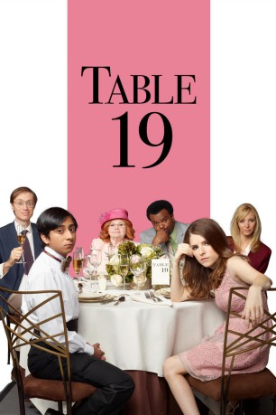
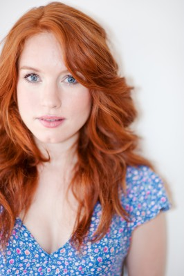
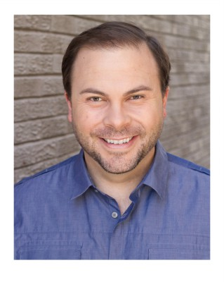
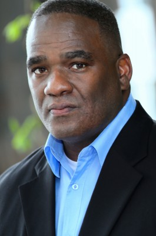

#6242 Table 19
 gesehen am 06.06.2017
gesehen am 06.06.2017
 
 IMDB-Wertung: 5.8 / 10
IMDB-Wertung: 5.8 / 10  Tomatometer: 26
Tomatometer: 26  Metascore: 40
Metascore: 40 
Eloise wollte schon immer Trauzeugin ihrer besten Freundin werden und bald sollte es soweit sein, denn die Hochzeit steht kurz bevor. Aus ihr nicht begreiflichen Gründen wird sie allerdings vom Trauzeugen ihres Amtes enthoben. Da Eloise ihrer Freundin nicht den schönsten Tag ihres Lebens versauen will, entscheidet sie sich trotzdem auf der Hochzeit zu erscheinen und sich so wenig wie möglich anmerken zu lassen. Das dürfte ihr allerdings schwer fallen, als sie erfährt, dass sie am Außenseitertisch sitzen soll…
Jahr: 2017
Dauer: 87 Minuten
FSK:
Land: Finnland Studio: 20th Century FoxTonspuren: DTS - ,
Untertitel:
Auflösung: 1080p (1920x808) Größe: 4976 MB
Genre: Drama, Komödie
Regisseur: Jeffrey Blitz
Drehbuch: Ifor David Monger
Soundtrack:
Darsteller:
 Anna Kendrick als Eloise McGarry
Anna Kendrick als Eloise McGarry- Rya Meyers als Francie Millner
- Charles Green als Mr. Manny
 Lisa Kudrow als Bina Kepp
Lisa Kudrow als Bina Kepp Craig Robinson als Jerry Kepp
Craig Robinson als Jerry Kepp Tony Revolori als Renzo Eckberg
Tony Revolori als Renzo Eckberg Margo Martindale als Freda Eckberg
Margo Martindale als Freda Eckberg Stephen Merchant als Walter Thimple
Stephen Merchant als Walter Thimple Carlos Aviles als Jalapeño
Carlos Aviles als Jalapeño June Squibb als Jo Flanagan
June Squibb als Jo Flanagan- Megan Lawless als Megan-Ann
 Amanda Crew als Nikki
Amanda Crew als Nikki- Jay Klaitz als Photographer
 Wyatt Russell als Teddy
Wyatt Russell als Teddy- Richard Haylor als Roger Millner
- Thomas Cocquerel als Huck
 Andrew Daly als Luke Pfaffler
Andrew Daly als Luke Pfaffler-  Maria Thayer als Infamous Kate Milner
- Andy Blitz als Notorious Donny Haczyk
 Becky Ann Baker als Carol Milner
Becky Ann Baker als Carol Milner- Max Silvestri als Champagne Server
- Nick Arapoglou als Receptionist
 Andy Stahl als Henry Grotsky
Andy Stahl als Henry Grotsky- Sheri Mann Stewart als Sherry Grotsky
-  Matthew Cornwell als Drunk Military Buddy
- Chris Whitley als Douglas Grotsky
- Elizabeth Ludlow als Carter
- Omer Mughal als Hotel Staff Member
- Chelle Ramos als Rodriguez Bride
- Gabriella Cila als Renzo's Study Buddy
- Lontrell Anderson als Server , uncredited
- Amanda Burke Buczek als Bridesmaid , uncredited
 Shannon Edwards als Milner Business Associate , uncredited
Shannon Edwards als Milner Business Associate , uncredited Fred Galle als Wealthy Family Friend , uncredited
Fred Galle als Wealthy Family Friend , uncredited- Matthew A. Hand als Wedding Guest , uncredited
-  Geoffrey Howard als Wedding Guest , uncredited
- Susan Lafayette Moss als Maid , uncredited
- Roger Neal als Wedding Guest , uncredited
- Tommy O'Brien als Robert Vardaros , uncredited
- Stacey Parrish als Bridesmaid , uncredited
- Shaker Sangam als Wedding Guest , uncredited
- Brad Oberhofer als Wedding Singer
- Nargis Aniston als Bridesmaid , uncredited
- Kelsey Cortez als Server , uncredited
- Payson Durant als Wedding Guest , uncredited
- Lainey Kloes als Wedding Guest , uncredited
- Daniel Patrick Shook als Pedestrian with child , uncredited
Datei: X:\2017(N-Z)\Table 19 (2017, FSK, 1920x808).mkv seit 22.05.2017
Festplatte: HD 2017(A-Z)-2018(A-F)
 Es gibt insgesamt 170 Filme in der Gruppe '2017(N-Z)'
Es gibt insgesamt 170 Filme in der Gruppe '2017(N-Z)'